왜 패턴이 필요할까요, 그리고 리포지토리
영상은 백엔드 앱이 자라는 과정부터 짚어요. 언어를 배우고 프레임워크를 고르고 데이터베이스를 붙여 API(Application Programming Interface) 몇 개를 만들 때까지는 다 잘 돌아가요. 그런데 기능이 늘고, 같은 코드를 만지는 사람이 늘고, 요구 사항이 바뀌기 시작하면 이야기가 달라져요.
아래 슬라이드가 그 변화를 벽돌로 보여 줘요. 왼쪽의 반듯한 파란 벽은 'PERFECTLY FINE', 오른쪽의 들쭉날쭉한 주황 벽은 '이해하기 어렵고(DIFFICULT TO UNDERSTAND) 위험한(RISKY)' 상태예요. 같은 코드가 시간이 지나며 이렇게 변해요.
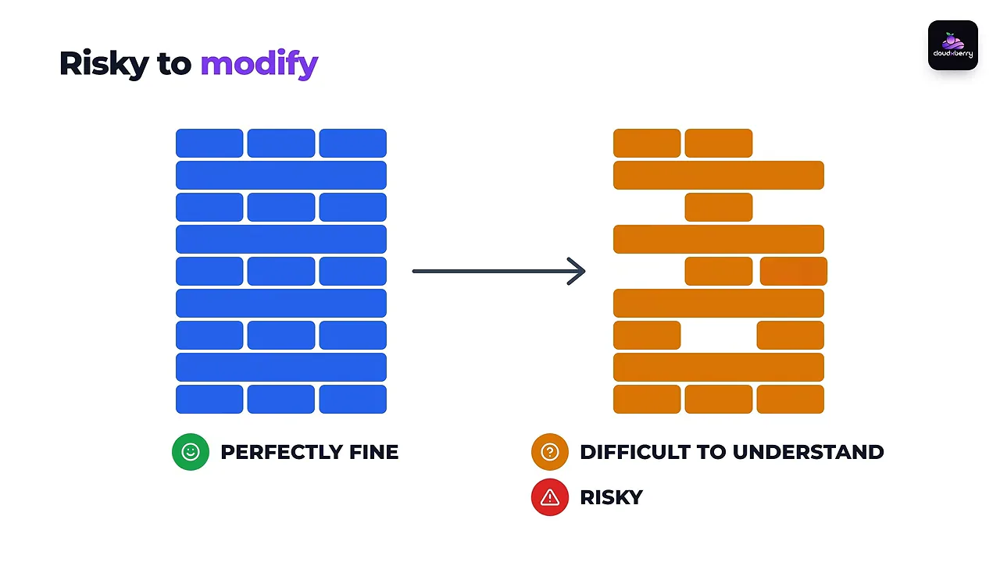
디자인 패턴은 이렇게 되풀이되는 문제에 이미 검증된 구조를 주는 거예요. 영상은 2027년을 앞두고 알아 둘 만한 패턴 10개를 차례로 소개해요.
1. 리포지토리 패턴: 데이터 접근을 떼어 내기
흔한 출발점은 컨트롤러나 서비스 안에 SQL(Structured Query Language)을 바로 넣는 거예요. 빠르고 쉬워서죠. 문제는 그 클래스가 검증, 비즈니스 규칙, 계산, 응답 만들기까지 떠안을 때예요. 데이터베이스도 너무 많이 알고 비즈니스도 너무 많이 아는 클래스가 되면 테스트도 어렵고 고치기는 더 어려워요.
리포지토리 패턴은 서비스와 데이터베이스 사이에 리포지토리를 하나 둬요. 슬라이드에서 서비스는 초록 리포지토리에 findById(), save()만 요청해요. 오른쪽에 늘어선 MySQL, PostgreSQL, MongoDB 아이콘 중 무엇을 실제로 쓰는지는 리포지토리만 알아요.
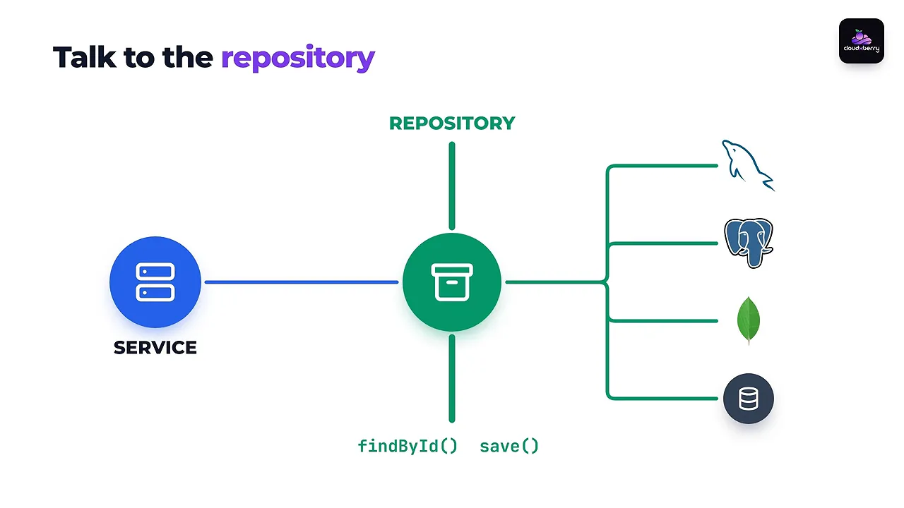
이렇게 나눠 두면 좋은 점이 두 가지예요. 비즈니스 로직을 테스트할 때 진짜 리포지토리 대신 목을 끼울 수 있어요. 그리고 데이터베이스 구현이 바뀌어도 데이터베이스 전용 코드가 리포지토리 안에 갇혀 있어서 나머지 코드는 거의 그대로 둘 수 있어요. 영상은 Spring Boot의 CrudRepository, ASP(Active Server Pages).NET Core, NestJS가 모두 이 방식을 기본으로 쓴다고 짚어요.
객체를 만드는 쪽: 팩토리와 싱글턴
2. 팩토리 패턴: 만드는 곳을 한 군데로
팩토리는 같은 기능에 구현이 여러 개일 때 쓸모가 생겨요. 영상의 예는 결제예요. 처음엔 Stripe 하나뿐이라 결제 객체를 직접 만들어도 문제가 없어요. 그러다 Razorpay가 붙고, PayPal이 붙고, 다른 결제사가 더 붙어요.
아래 슬라이드는 그때 벌어지는 일을 보여 줘요. 빨간 상자마다 new StripePayment()가 흩어져 있고, 가운데 새 결제사('NEW PROVIDER')가 들어오는 순간 그 상자들을 'MULTIPLE PLACES'에서 다 고쳐야 해요.
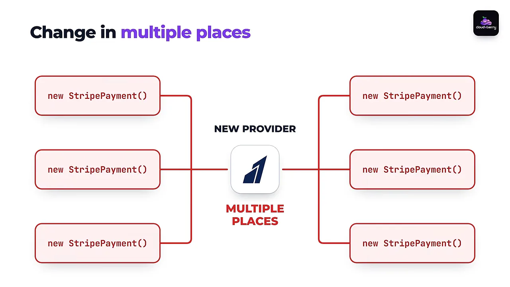
팩토리를 두면 앱은 "Stripe 결제 객체를 만들어"가 아니라 "결제 수단이 하나 필요해"라고만 말해요. 어떤 구현을 돌려줄지는 설정이나 비즈니스 규칙을 보고 팩토리가 정해요. 슬라이드 위쪽의 코드 블록 줄에 'INDEPENDENT'가 붙어 있고, 아래 Stripe·Razorpay·PayPal 옆의 + 칸이 새 결제사를 쉽게 더할 수 있다는 뜻이에요.
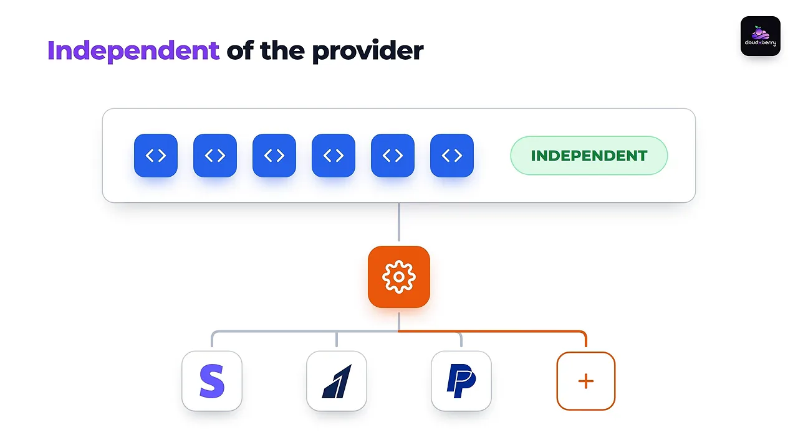
3. 싱글턴 패턴: 하나만 있어야 하는 것
설정 관리자, 로깅 서비스, 캐시 관리자처럼 앱 안에 여러 개 있으면 오히려 이상한 객체가 있어요. 싱글턴은 앱이 살아 있는 동안 인스턴스를 하나만 두어서, 모두가 같은 공유 자원을 쓰게 해요. 쓸데없이 객체를 여러 번 만들지 않는 효과도 있어요.
영상은 여기서 경고를 하나 붙여요. 싱글턴은 남용하기 쉬운 패턴이에요. 아래 슬라이드처럼 ConfigManager를 'GLOBAL VARIABLE'처럼 쓰면, OrderService, PaymentService, CartService가 모두 몰래 거기에 기대게 돼요. 맨 아래 빨간 'HIDDEN DEPENDENCIES'가 그 결과예요.
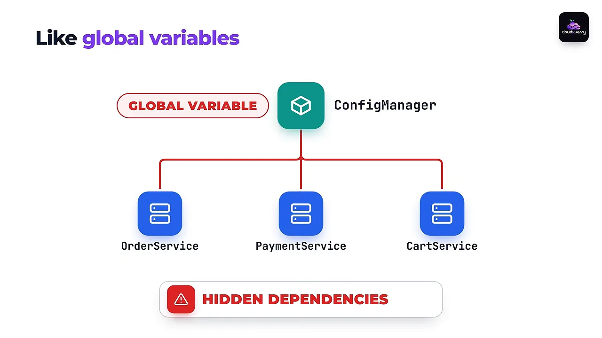
요즘 백엔드에서는 의존성 주입 프레임워크가 객체 생명주기를 대신 관리해 줘요. 다음 슬라이드에서 ConfigManager는 'DEPENDENCY INJECTION' 상자 안에 'SINGLETON' 표시를 달고 있고, 세 서비스에 주입되는 쪽으로 선이 나가요. 직접 싱글턴을 구현하지 않아도 이미 같은 이점을 얻고 있을 수 있다는 뜻이에요.
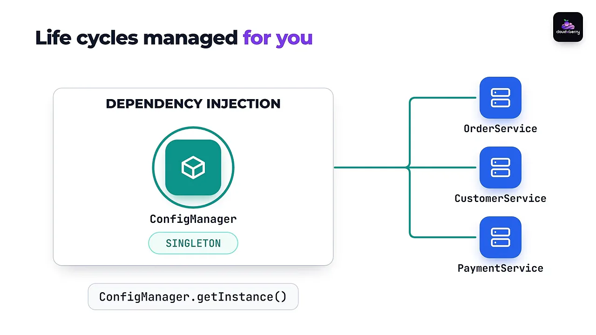
규칙과 후속 작업 나누기: 전략과 옵저버
4. 전략 패턴: 규칙마다 따로 떼기
같은 작업을 상황에 따라 다르게 해야 할 때가 있어요. 영상의 예는 쇼핑몰 할인이에요. 프리미엄 회원 할인, 학생 할인, 명절 프로모션 가격이 다 다른 규칙을 따라요. 한 메서드에 if-else를 계속 붙여도 처음엔 돌아가지만, 모든 규칙이 한곳에 쌓이면서 점점 읽기 어려워져요.
전략 패턴은 규칙마다 전략 하나씩을 만들어요. 아래 화면에서 interface DiscountStrategy 아래로 PremiumDiscount, StudentDiscount, FestivalPricing이 나란히 있고, 맨 아래에 새로 끼워 넣은 DiscountPolicy가 보여요.
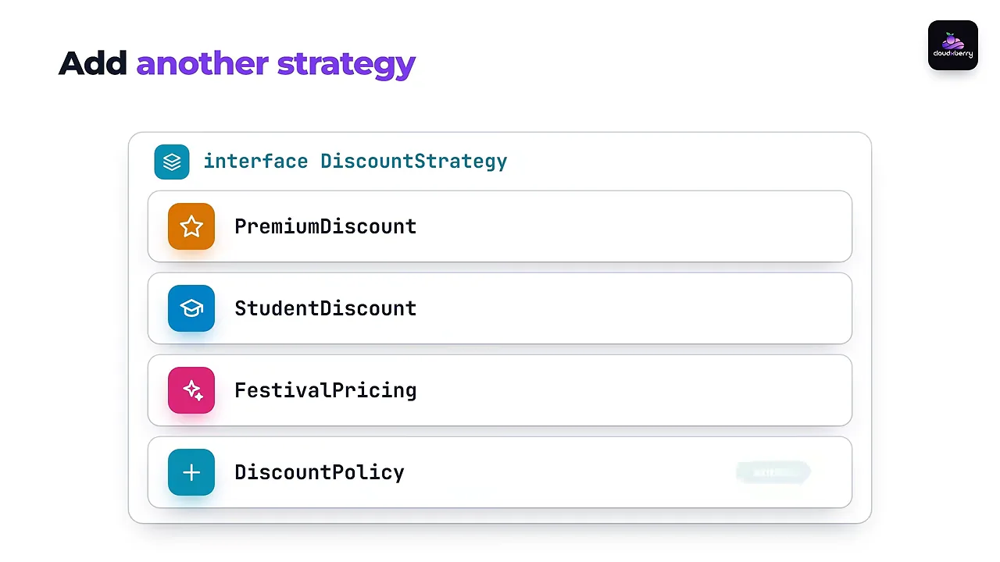
앱은 상황에 맞는 전략을 골라 쓰기만 해요. 영상은 인증 방식, 결제 처리, 배송비 계산, 세금 규칙, 추천 시스템처럼 '같은 일을 하는 방법이 여러 개'인 곳이면 어디든 같은 방식을 쓸 수 있다고 해요.
5. 옵저버 패턴: 후속 작업은 각자 듣게
주문 하나가 들어오면 할 일이 줄줄이 따라와요. 재고를 갱신하고, 확인 메일을 보내고, 적립금을 쌓고, 분석에 기록하고, 고객이나 창고 팀에 알림을 보내요. 아래 OrderService.java의 placeOrder() 안에 다섯 줄이 바로 그 일들이에요. 왼쪽 아이콘 다섯 개가 각 줄이 부르는 서비스예요.
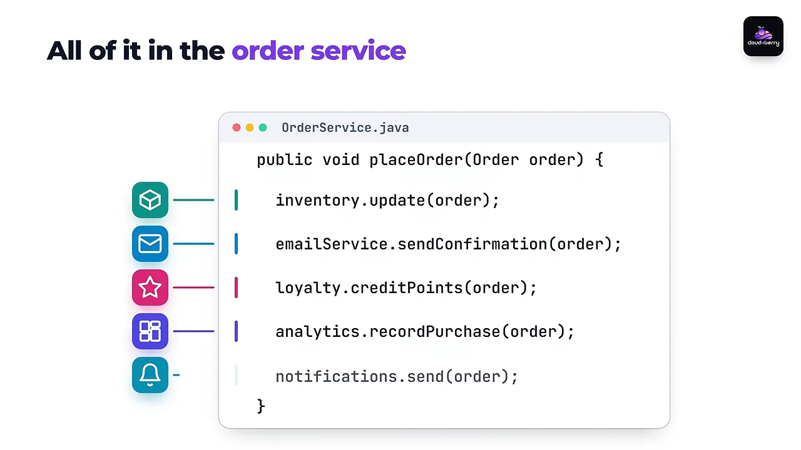
옵저버 방식에서는 주문 서비스가 '주문 완료' 이벤트 하나만 발행해요. 아래 슬라이드에서 publish()로 나온 주황 'ORDER PLACED' 막대 아래에 재고, 이메일, 적립금, 분석 서비스가 각자 매달려 있어요. 주문 서비스는 이들이 무슨 일을 하는지 몰라도 돼요.
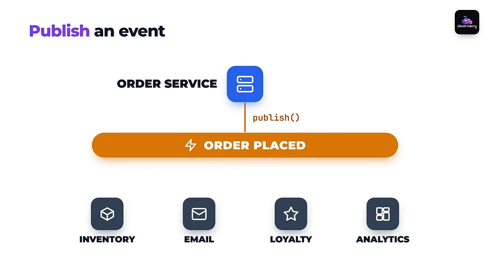
이런 이벤트 기반 방식은 메시지 브로커 기술과 바로 이어져요. 영상은 Kafka, RabbitMQ, Azure Service Bus를 말하고, 슬라이드에는 AWS(Amazon Web Services) SNS(Social Networking Service)와 Google Pub/Sub까지 다섯 개가 올라와 있어요.
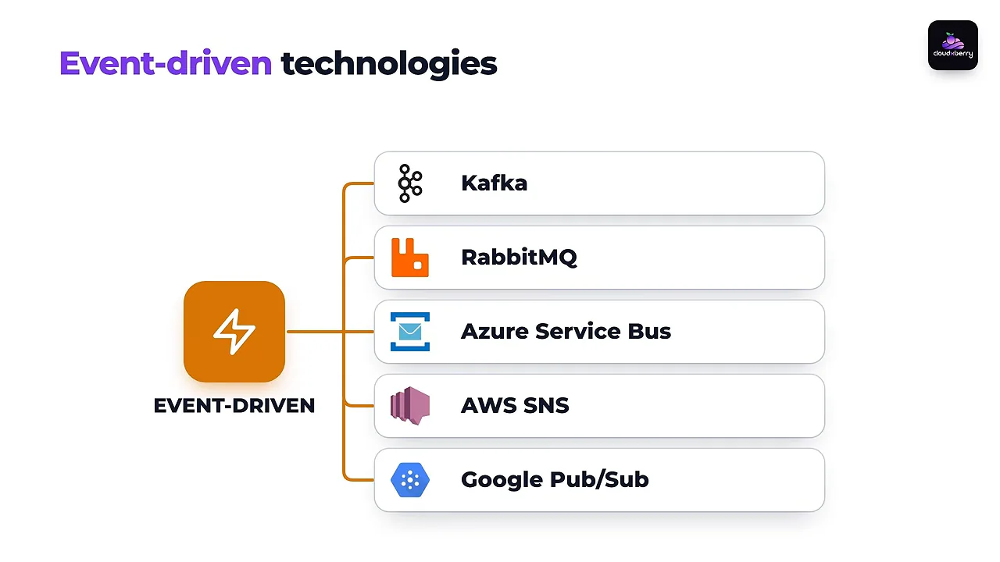
만들기와 연결: 빌더와 어댑터
6. 빌더 패턴: 한 단계씩 채워서 만들기
앱이 복잡해지면 선택 속성이 잔뜩 붙은 객체가 생겨요. 사용자 프로필을 예로 들면, 이름과 이메일만 있는 사람도 있고 전화번호, 주소, 프로필 사진, 회사 정보, SNS 링크, 구독 설정, 알림 설정까지 다 있는 사람도 있어요.
이걸 생성자 하나로 받으면 아래처럼 돼요. new UserProfile( 뒤에 문자열과 true, false, true, null이 줄줄이 이어지고, 오른쪽에 큰 숫자 11이 인자 개수를 세고 있어요. 네 번째 true가 무슨 뜻인지 코드만 봐서는 알 수 없어요.
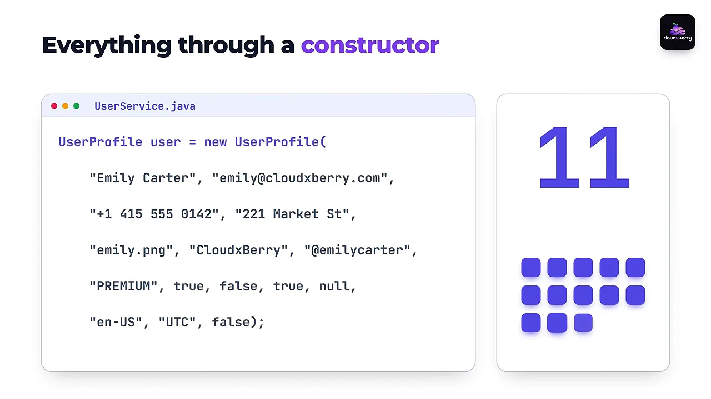
빌더는 값을 한 번에 다 넘기지 않고, 이름을 붙여 하나씩 채운 뒤 마지막에 만들어요. 아래 비교에서 왼쪽 빌더 코드는 .name("Emily Carter"), .email(...)처럼 각 값이 무엇인지 드러나서 'EXPLICITLY IDENTIFIED'예요. 오른쪽 생성자 코드는 이메일과 이름 순서를 바꿔 넣었는데도 티가 안 나서 'WRONG ORDER'예요.
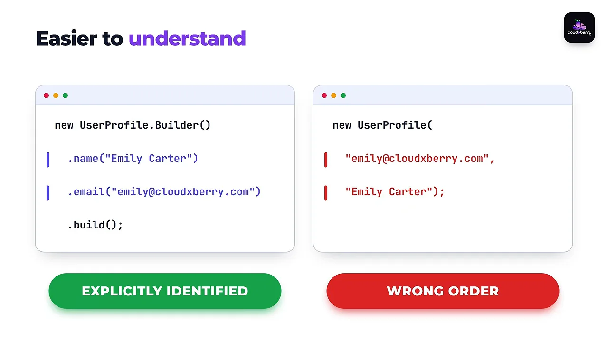
이 방식은 복잡한 설정 객체에서 특히 흔해요. 아래 AppConfig.java의 ClientConfig.builder().endpoint(...).build()가 그 모양이고, 아래에 Java, Kotlin, C#, 클라우드 SDK(Software Development Kit)가 같은 방식을 쓴다고 나와요.
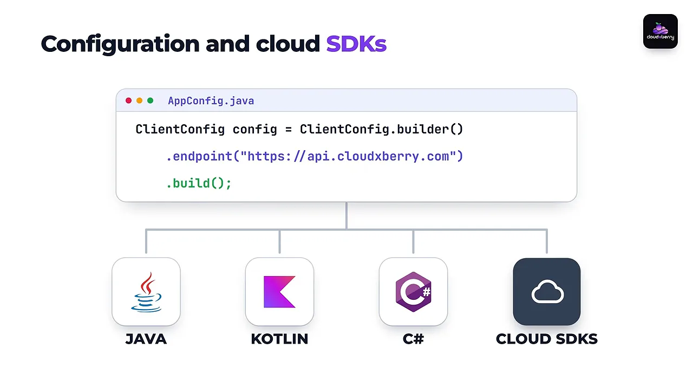
7. 어댑터 패턴: 외부 형식을 번역하기
백엔드는 혼자 돌지 않아요. 결제 게이트웨이, 은행 시스템, 배송사, 외부 API, 오래된 레거시 시스템과 언젠가는 붙어야 해요. 그리고 이들은 데이터를 저마다 다르게 표현해요. 아래 화면 위쪽에서 한 시스템은 "customer_id": 101, 다른 시스템은 그냥 "id": 101이에요. 아래쪽은 camelCase와 snake_case가 다른 경우예요.
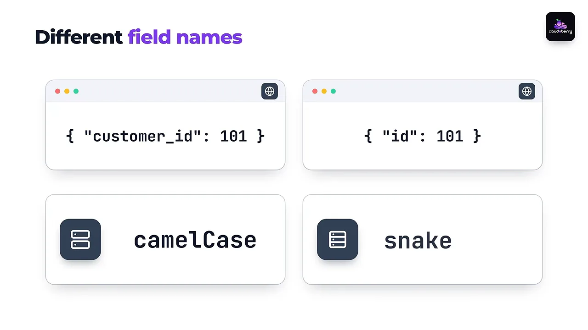
이 차이가 코드 곳곳에 퍼지면 모든 코드가 모든 외부 시스템의 사정을 알아야 해요. 어댑터는 앱과 외부 시스템 사이에 층을 하나 둬요. 아래 그림에서 외부 시스템은 "customer_id"로 보내고, 가운데 어댑터를 지나면 앱이 기대하는 "customerId"로 바뀌어 있어요.
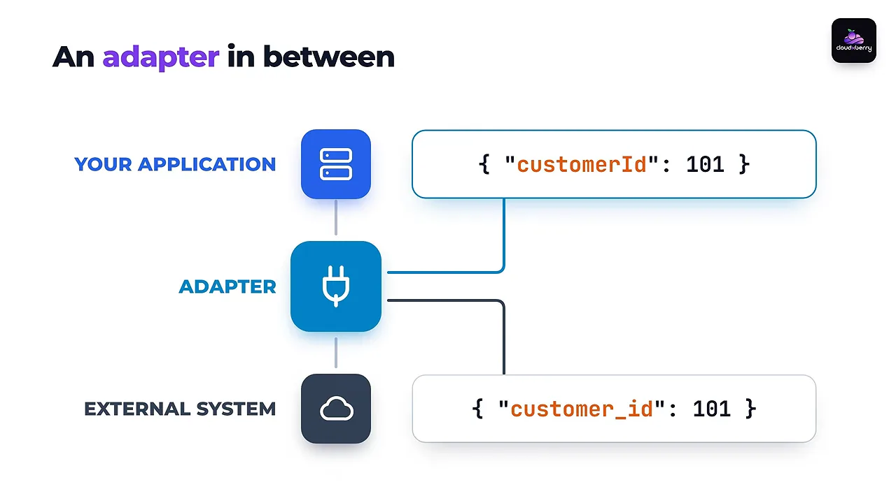
덧붙이기와 나누기: 데코레이터와 CQRS
8. 데코레이터 패턴: 감싸서 기능 더하기
처음엔 상품 정보만 돌려주던 서비스가 있어요. 그런데 요구가 계속 붙어요. 캐싱, 로깅, 성능 측정, 권한 확인, 감사 기록, 요청 수 제한까지요. 매번 원래 서비스를 고치면 아래 ProductService.java처럼 돼요. getProduct() 한 메서드 안에 rateLimiter, auth, audit, log, metrics, cache가 줄줄이 섞여 있고, 아래에 'TOO MANY THINGS', 'DIFFICULT TO UNDERSTAND'가 붙어 있어요.
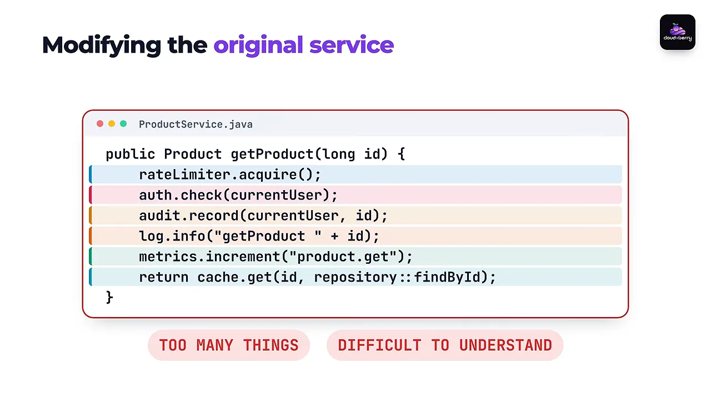
데코레이터는 원래 구현을 고치지 않고 바깥을 감싸서 기능을 더해요. 캐싱 데코레이터로 한 번 감싸고, 그 위를 로깅 데코레이터로, 또 그 위를 지표 수집이나 권한 확인 데코레이터로 감싸는 식이에요. 아래 슬라이드 왼쪽에는 'CACHING', 'LOGGING', 'METRICS', 'AUTHORIZATION' 스위치가 있고, 켜진 것만 오른쪽 ProductService를 겹겹이 둘러싸요. 'METRICS'는 꺼져 있어서 그만큼 고리가 없어요.
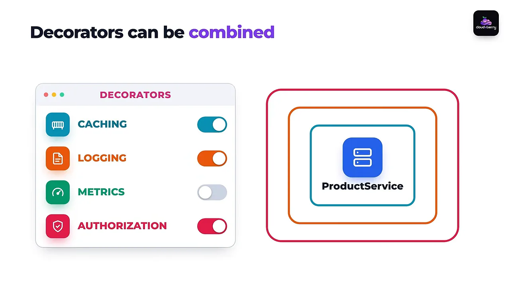
백엔드 프레임워크의 미들웨어가 비슷한 생각이에요. 아래 그림에서 요청은 사용자에서 출발해 인증, 로깅, 캐싱 미들웨어를 차례로 지난 뒤에야 오른쪽 애플리케이션 로직에 닿아요.
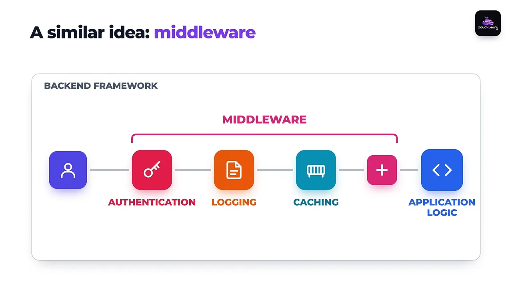
9. CQRS: 읽기와 쓰기를 나누기
CQRS는 이름은 어렵게 들리지만 생각은 단순해요. 데이터를 읽는 일과 바꾸는 일을 같은 방식으로 처리하지 말고 두 책임으로 나누는 거예요. 아래 슬라이드 맨 위에 풀네임이 적혀 있고, 그 아래 'READING'과 'CHANGING DATA'가 각자 상자로 갈라져 있어요.
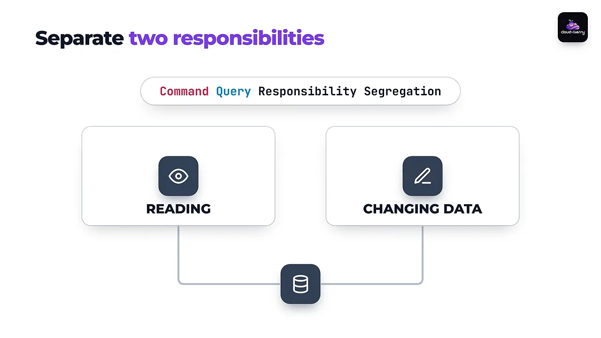
영상의 예는 SNS예요. 수백만 명이 매일 프로필을 읽지만 수정은 그보다 훨씬 적어요. 시스템이 커지면 읽기와 쓰기의 요구가 크게 달라져서, 같은 모델과 인프라로 양쪽을 다 처리하는 게 최선이 아닐 수 있어요. CQRS에서는 커맨드가 데이터를 바꾸고, 쿼리는 읽기만 해요. 아래 그림에서 UpdateProfileCommand는 빨간 선으로 데이터베이스에 가서 'CHANGING DATA'를 하고, 쿼리 쪽은 읽기만 해요.
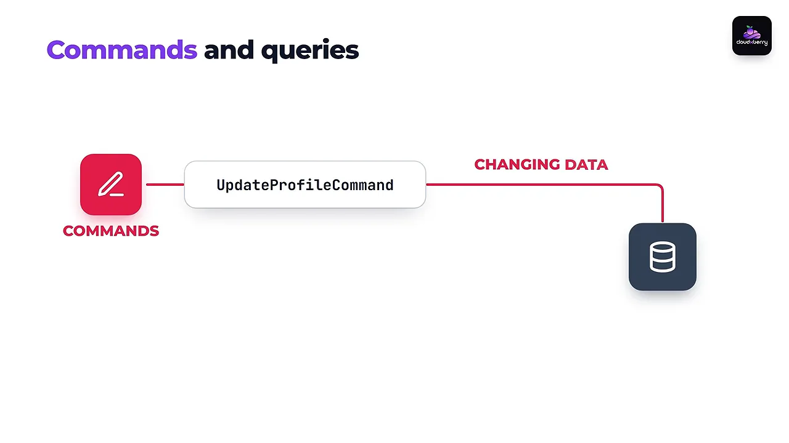
그렇다고 모든 앱에 넣을 건 아니에요. 아래 슬라이드는 단순한 CRUD 앱에 CQRS를 더하면 오른쪽 'UNNECESSARY COMPLEXITY'처럼 상자와 선이 잔뜩 늘어난다는 식으로 보여 줘요. 아래 초록 줄은 분리가 실제 문제를 풀 때만 쓰라는 문장이 써지는 중이에요.
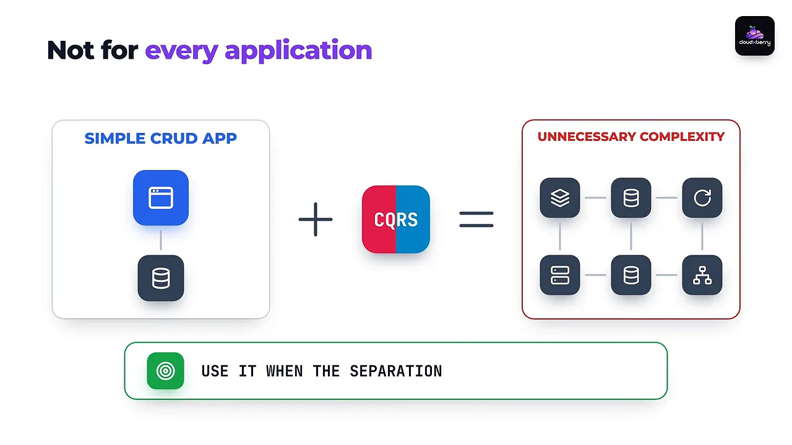
장애가 번지지 않게: 서킷 브레이커와 정리
10. 서킷 브레이커: 죽은 서비스에 계속 매달리지 않기
분산 시스템은 다른 서비스에 기대서 돌아가고, 언젠가는 그중 하나가 죽어요. 외부 결제 게이트웨이가 갑자기 멈췄다고 해 봐요. 아래 슬라이드에서 오른쪽 결제 게이트웨이에 빨간 'DOWN'이 붙어 있는데, 앱은 계속 POST /payments를 보내고 있어요. 그 사이 모래시계 모양의 대기 요청이 쌓이고, 왼쪽 'CONNECTIONS'와 'THREADS' 막대가 주황으로 가득 찼어요.
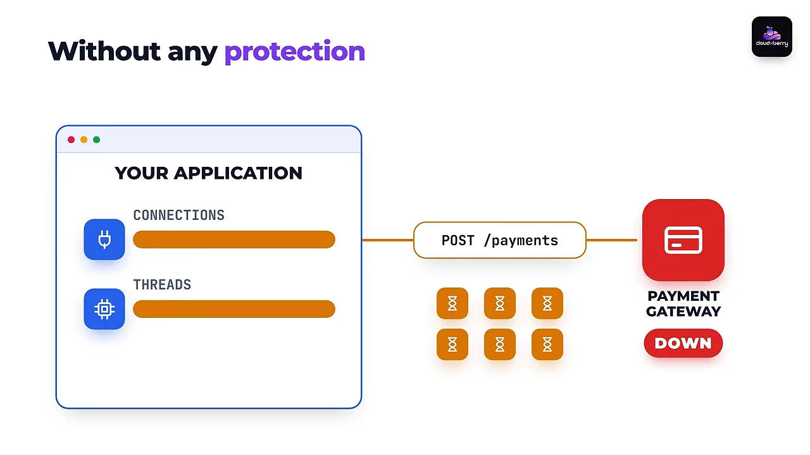
서킷 브레이커는 실패가 반복되는 걸 감지하면 회로를 열어서, 그 서비스로 요청을 잠시 보내지 않아요. 아래 그림에서 앱과 오른쪽 서비스 사이의 원이 빨갛게 'OPEN'이 되고, 그 너머 선은 흐리게 끊겨 있어요.
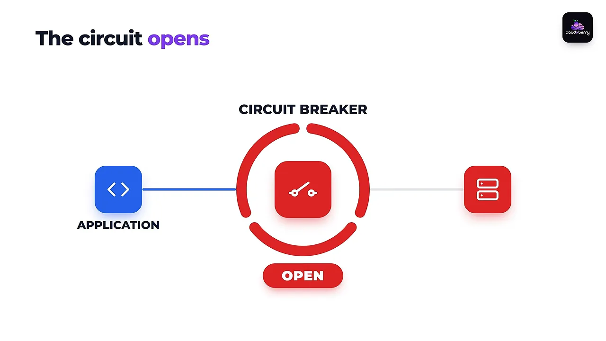
시간이 좀 지나면 회로는 요청 몇 개만 흘려보내서 외부 서비스가 회복했는지 확인해요. 슬라이드의 'OPEN', 'HALF-OPEN', 'CLOSED' 세 칸이 그 상태들이에요. 아래 화면은 확인용 요청이 통과해 서비스가 'WORKING AGAIN'이 되고, 맨 아래 'CLOSED'가 초록으로 켜진 순간이에요.
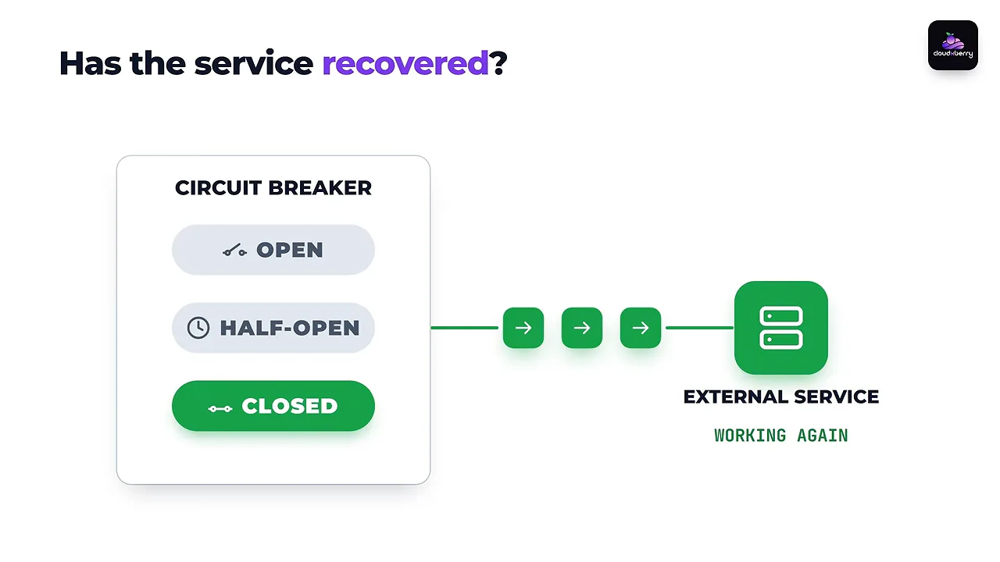
영상이 말로 설명한 상태 변화를 한 그림으로 모으면 이래요. 슬라이드는 세 상태를 나열만 해서, 어떤 조건에서 어디로 넘어가는지는 말로만 나와요.
stateDiagram-v2 direction LR [*] --> CLOSED CLOSED --> OPEN: 실패가 반복됨 OPEN --> HALF_OPEN: 일정 시간이 지남 HALF_OPEN --> CLOSED: 시험 요청 성공 HALF_OPEN --> OPEN: 여전히 실패
마지막으로 영상은 구현체를 셋 꼽아요. 아래 슬라이드에 Resilience4j, Polly, 그리고 'SERVICE MESH'로 묶인 Istio가 있어요. 클라우드 네이티브나 분산 시스템에서 특히 쓸모 있는 패턴이라는 말과 함께요.
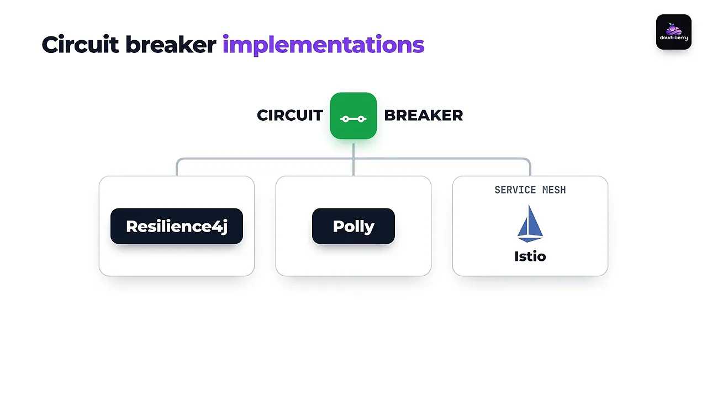
정리: 패턴은 함께 쓰여요
영상은 실제 백엔드가 이 패턴들을 따로따로 쓰지 않는다고 강조해요. 패턴마다 푸는 문제가 달라서 한 앱 안에 여러 개가 함께 들어가요. 영상이 다룬 열 개를 '어떤 문제를 푸나'로 다시 묶으면 이래요.
| 패턴 | 이런 문제가 생기면 | 이렇게 나눠요 |
|---|---|---|
| 리포지토리 | 서비스가 데이터베이스 쿼리까지 직접 알고 있어요 | 데이터 접근을 리포지토리 뒤로 숨겨요 |
| 팩토리 | 결제사가 늘 때마다 여러 곳을 고쳐야 해요 | 객체 만드는 일을 한곳에 모아요 |
| 싱글턴 | 설정·로깅처럼 하나만 있어야 할 객체가 있어요 | 인스턴스를 하나로 유지해요 (남용 주의) |
| 전략 | 할인 규칙 if-else가 한 메서드에 쌓여요 | 규칙마다 전략을 따로 만들어요 |
| 옵저버 | 주문 서비스가 후속 작업을 다 직접 불러요 | 이벤트를 발행하고 각자 듣게 해요 |
| 빌더 | 생성자 인자가 10~15개로 늘어나요 | 이름 붙여 한 단계씩 채워 만들어요 |
| 어댑터 | 외부 시스템마다 데이터 형식이 달라요 | 사이에서 형식을 번역해요 |
| 데코레이터 | 캐싱·로깅·권한이 원래 메서드에 섞여요 | 바깥을 감싸서 기능을 더해요 |
| CQRS | 읽기와 쓰기의 부하와 요구가 크게 달라요 | 커맨드와 쿼리를 나눠요 (단순한 앱엔 과함) |
| 서킷 브레이커 | 죽은 외부 서비스 때문에 내 앱까지 막혀요 | 실패가 반복되면 회로를 열어 요청을 끊어요 |
영상은 정의를 외울 필요는 없다고 해요. 중요한 건 패턴 뒤의 문제를 이해하고, 언제 그 패턴이 코드를 더 낫게 만드는지 알아보는 거예요. 아래 슬라이드에서 'PROBLEM'이 'PATTERN'으로 이어지고, 거기서 'EASIER TO MAINTAIN', 'EASIER TO EXTEND', 'MORE RESILIENT' 세 갈래가 나와요.
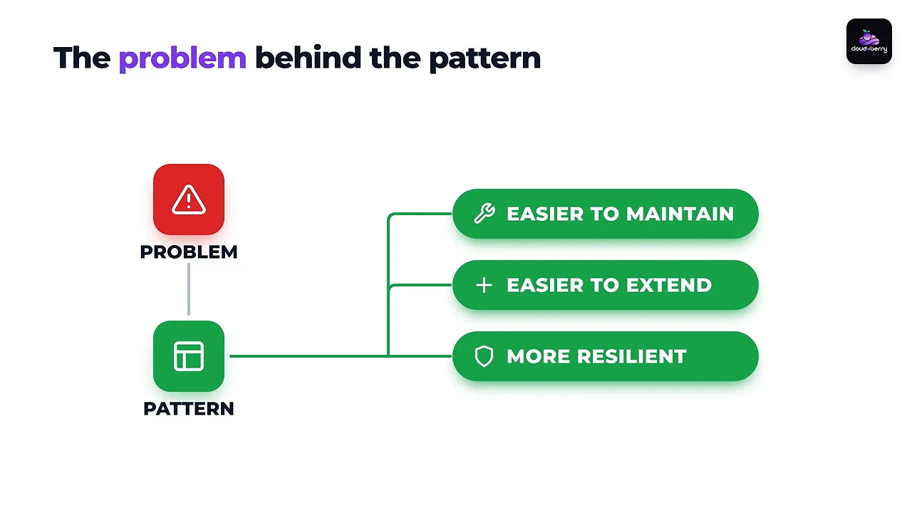
As a back-end developer, writing code that works is only the beginning.
백엔드 개발자에게 동작하는 코드는 시작일 뿐이에요.
— 영상 13:51
영상은 기능, 개발자, 외부 서비스, 실제 트래픽이 계속 늘어나는 동안 코드를 이해 가능하고, 테스트 가능하고, 믿을 만하게 지키는 게 진짜 과제라고 맺어요.